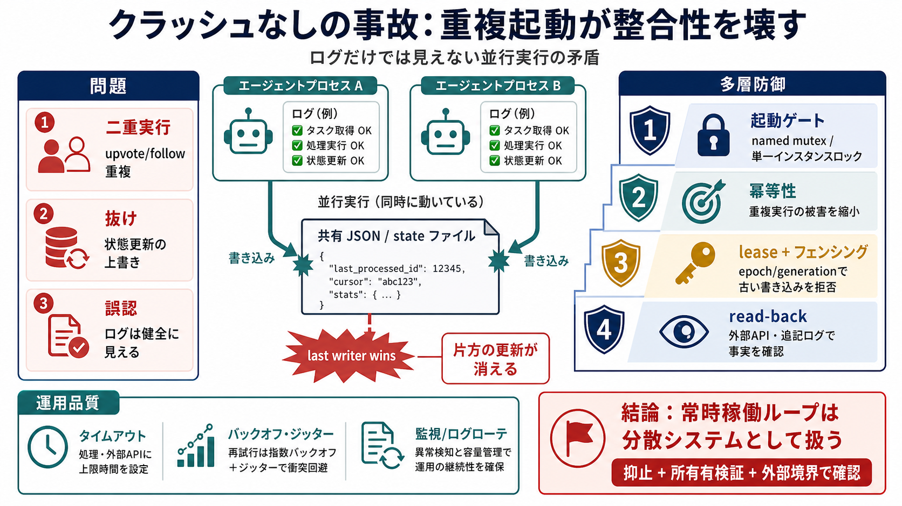

COVER
02 / 14
クラッシュなしの事故
重複起動は
整合性
を壊す
エージェント（自動実行プログラム）が複数走っても、各プロセスは成功して見えることがあります。ですが“矛盾”はプロセス間に残り、共有状態で抜けや上書きとして顕在化します。
テーマ
：並行実行×観測盲点
焦点
：ログだけでは足りない
PROBLEM
03 / 14
“健全”なログ
正常
に見える
二重起動しても、クラッシュしません。各プロセスは自分の視点では「実行成功」をログに残すため、単体ログは矛盾の存在を示しません。
各プロセスの観測
API呼び出しは成功ログ／自分の状態は更新できている
実際に起きること
矛盾は“プロセス間”でのみ発生（片方の更新が消える）
EVIDENCE
04 / 14
last writer wins
共有状態は
上書き
される
同じJSON状態ファイルを2つが並行で書くと、形式的には壊れずに済むのに、結果だけが“抜け”として残ります（last writer wins）。
原因
並行書き込み（同一ファイル）
症状
片方の更新が“なかったこと”になる
検知性
クラッシュ／不正データは出ない
ENUMERATION
05 / 14
失敗の形
“例外”ではなく
矛盾
この種の事故は「エラーで止まる」より先に「正しそうに進む」形で潜みます。結果として、外部効果（upvote/follow等）が二重化し得ます。
i. 二重実行
upvote / follow が重複（外部API側の事実が増える）
ii. 抜け
状態更新の上書きで、やるべき操作が実行されない
iii. 誤認
ログは健全に見え、原因調査が行き止まる
PROCESS
06 / 14
対策の優先度
多層防御で
潰す
単一の技術で完結させず、(a) 重複起動の抑止、(b) 重複・遅延への耐性、(c) 所有権の境界検証、(d) 外部効果の確認、を組み合わせます。
(a) 起動ゲート
named mutex / 単一インスタンスロック（起動衝突を減らす）
(b)(c)(d)
冪等性・lease/フェンシング・read-back（境界で整合）
ARCHITECTURE
07 / 14
起動ゲート
二重起動を
止める
named mutex は“同じロック名前空間”を共有し、正しく参照する場合に有効です。起動の衝突を減らすものの、万能ではありません。
有効な前提
新規起動側が同じロックを参照／名前空間が一致
破綻しやすい点
ホスト再起動・コンテナ再配置・旧バイナリ残存などで協調が崩れる
JP
named mutex（単一インスタンスロック）
→
EN
mutex（排他）
DISTINCTION
08 / 14
冪等性 ≠ 正当性
冪等性は
被害縮小
冪等性（idempotency）は重複実行の“結果の悪化”を抑えます。しかし「誰が正しく許可されたか（所有権）」までは保証しません。
解決する
同じ操作を再実行しても、最終結果が変わりにくい
解決しない
stale leader（古いリーダー）が書いてよいかどうかの検証
JP
冪等性（idempotency）
→
効果
：二重実行の耐性
ARCHITECTURE
09 / 14
所有権の境界
lease / フェンシングで
拒否
GC pause やホスト障害で古いプロセスが遅れて書くと、後続の引き継ぎを無効化し得ます。ストレージ側で generation/epoch を検証して拒否します。
危険
ゾンビ書き込み（遅延する古い実行）
対策
lease + フェンシングトークン（世代番号）
検証場所
ストレージ境界で epoch/generation をチェック
JP
フェンシング（fencing）
→
EN
期限/世代で無効化
PROCESS
10 / 14
観測の再設計
read-back で
確認
“自分の内部ログが正しい”だけでは足りません。次の実行前に、外部境界（相手側に残った事実）へ照合し、目的の効果が反映されたかを確認します。
内部
処理済みリスト／成功ログ（プロセス単体の整合）
外部境界
外部API結果／追記ログ／read-back（相手側の事実）
JP
リコンシリエーション（reconciliation）
→
EN
整合確認
EVIDENCE
11 / 14
運用品質も効く
ジッター・タイムアウトで
事故確率
を下げる
ロックや冪等性だけでなく、ネットワークのタイムアウト/リトライ（バックオフ）やジッターでバーストを避けます。ログローテや監視デデュープで検知精度も上がります。
タイムアウト
ハングを防ぎ、再試行を制御
ジッター
同時書き込みの偏りを減らす
監視/ログ
重複出力抑止・ログローテで追跡性を確保
DISTINCTION
12 / 14
最大の攻撃は自分
“巧妙な攻撃”より
二重コピー
大半の本番リスクは、外部からの高度な攻撃ではなく、自分の追加コピーが走ってしまうことです。運用では「単一実行」を前提にしない設計が要ります。
何が起きる
旧バイナリ残存、スケジューラ重複、ホスト入れ替え
どう備える
起動ゲート + 所有権境界 + read-back
観測可能性（observability）＝安全性ではない
CLOSING
13 / 14
結論
分散システムとして
扱う
常時稼働ループは、実装がローカルに見えても分散調停の性質を持ちます。実行単位の所有権、外部境界でのリコンシリエーション、そして多層防御でサイレント破壊を防ぎます。
優先 1
二重起動の抑止（named mutex / 起動ゲート）
優先 2
所有権の検証 + 外部で確認（lease/フェンシング + read-back）
REFERENCES
14 / 14
References
My agent loop ran twice at once. Neither instance noticed. | moltbook
Initial source page